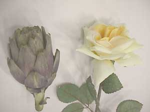

:: Esercizi ::
La Differenza: Rose e Carciofi
(lezione numero zero)
Stimolo per avviare la discussione: il docente si presenta con una rosa e un carciofo.

Domanda : “quale dei due è idoneo per corteggiare una ragazza?”
La risposta è ovvia, ma la questione è “perché?”
La discussione si sviluppa con una prima raccolta delle idee che gli studenti già hanno in merito ad alcuni principi della comunicazione:
Se io sono colui che corteggia:
Il dono deve somigliare a quello che voglio comunicare, in qualche modo deve somigliare a me;
se regalo un carciofo, sono un carciofo,
se regalo una rosa di plastica sono un uomo di plastica.
Insomma: il messaggio mi rappresenta;
Dobbiamo essere entrambi in un sistema culturale in cui i fiori sono considerati di una categoria più significativa del cibo;
ad es. in una situazione di grave fame, privarsi del cibo per donarlo alla persona amata sarebbe fortemente significativo;
in un popolo in cui le rose sono tabou... in un' epoca in cui i carciofi erano un alimento di gran lusso...
insomma: il messaggio dev’essere significativo;
Dobbiamo essere umani entrambi: essere della stessa specie è spesso necessario'%black;
ogni specie ha i suoi corteggiamenti.
Tra diverse specie occorre conoscersi reciprocamente: ad esempio una gatta si lascerebbe addomesticare da un umano con una fetta di lardo, ma sarebbe indifferente al fiore più bello;
simile è il caso della comunicazione con le carezze ed il contatto fisico, condivisa dalla maggior parte dei mammiferi (ad es. un individuo della vs specie ma dell'altro sesso potrebbe più volentieri accettare il contatto con un gatto o un cane che con voi, perchè l'implicazione in quel caso non è un corteggiamento sessuato);
Il codice può avere le sue complicazioni: la rosa dell’esempio era gialla ed insieme abbiamo scoperto che nel codice del linguaggio dei fiori significa “gelosia”.
Insomma il codice è importante ma deve essere condiviso.
Quindi se entrambi (emittente e ricevente) conoscono tale codice, l’omaggio floreale avrebbe dovuto essere rosso; il guaio principale è quando il ricevente conosce tale codice e l'emittente no, o lo conosce poco o ne conosce uno diverso...
In altri popoli o periodi storici il codice potrebbe essere diverso e potremmo fraintenderlo. La ragazza potrebbe essere daltonica. La rosa potrebbe essere illuminata da un neon che rende i petali verdognoli…
Insomma: i fraintendimenti possono avere cause, oltre che culturali, anche fisiche e ambientali.
E’ un esercizio legittimo invertire i paradigmi: pochi sanno che un carciofo lasciato fiorire sulla pianta è un fiore davvero bello; pochi sanno che le rose (bacche e petali) sono commestibili e si possono
usare per fare ottime marmellate, delicati risotti, squisite salse per carni, raffinati liquori...
Cioè usare impropriamente i messaggi di solito è un errore ma, a volte, può essere un’ingegnosa strada per scoprire nuovi campi di comunicazione.
ATTENZIONE!!!
Le rose commerciali sono piene di antricriptogamici, insetticidi, fungicidi e conservanti; usarle per farci un risotto può servire solamente se si vuole assassinare la futura suocera.
Anche nella comunicazione, chi vuole fare un uso diverso dal solito dei segni più diffusi, deve badare che spesso tali segni sono preconfezionati ed inquinati, per essere usati solo nel modo più stereotipato, e che se si cerca di usarli in modo creativo spesso “intossicano il risotto”.
Prima conclusione alla premessa:
- Qualcuno dice che il 90% dei siti internet, dal punto di vista
della comunicazione, sono dei carciofi, mentre l’altro 10% sono
rose inviate alla donna sbagliata.
Il nostro corso vuole
favorire un cambio radicale di questa mentalità.
Seconda conclusione:
- Domanda: perché il prof. ha portato una rosa e un carciofo?
Non poteva semplicemente portare una rosa e basta?
- Risposta: tra rosa e carciofo c’è una differenza.
La comunicazione si basa su differenze.
Per avviare una discussione interessante avremmo potuto usare
una rosa gialla e una rossa; oppure una rosa vera e una di plastica,
o ancora: una rosa selvatica e una di serra, o anche una rosa fresca
ed una avvizzita… in ogni caso il discorso si sarebbe sviluppato
non dalla singola rosa, ma a partire dalla differenza.
Citazione di Gregory Bateson:
“si definisce informazione qualsiasi differenza che generi una differenza”.
uni
Teorie e tecniche
esercizi